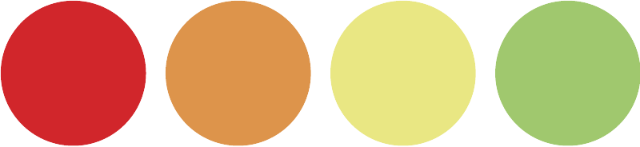
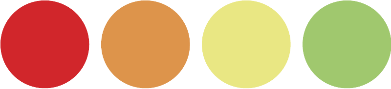
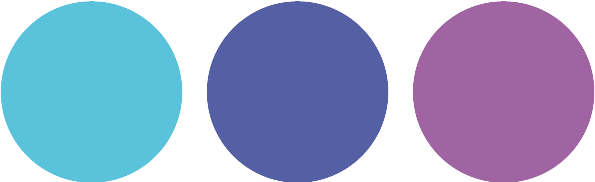
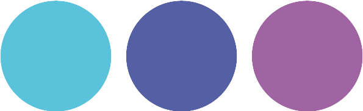
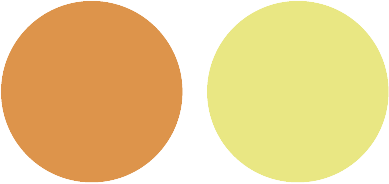
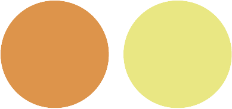
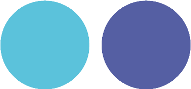
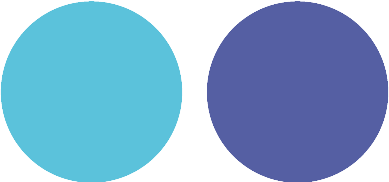
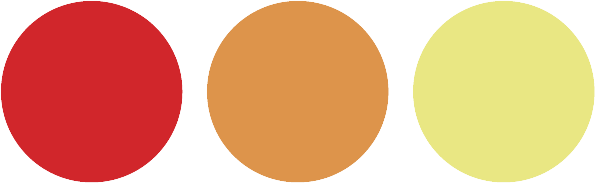
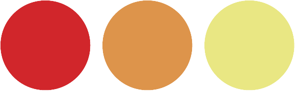

Nuestros productos
 

Protección, estilo y comodidad en un solo accesorio. Las SolarEdge están diseñadas con lentes polarizadas de alta calidad que bloquean los reflejos y ofrecen una protección UV del 100%. Su montura ligera y ergonómica garantiza un ajuste perfecto, mientras que su diseño moderno las convierte en el complemento ideal para cualquier ocasión, ya sea en la ciudad o en la playa. ¡Dale a tu mirada el cuidado y el estilo que se merece!
 

Las UltraClear combinan un diseño moderno con lentes de alta definición para ofrecerte una visión nítida y precisa. Su montura ligera y resistente proporciona comodidad durante todo el día, perfecta para quienes buscan funcionalidad sin renunciar al estilo.
 

Si pasas muchas horas frente a pantallas, las BlueShield Pro son la elección ideal. Con lentes que bloquean la luz azul, reducen la fatiga ocular y mejoran la calidad del sueño. Su diseño ergonómico y elegante las hace perfectas para el trabajo y el día a día.

Un diseño atemporal que nunca pasa de moda. Las Classic Frame destacan por su montura ligera y duradera, ideal para cualquier ocasión. Su estilo versátil se adapta a todos los rostros, combinando elegancia y practicidad.
 

Las SmartVision ofrecen un equilibrio perfecto entre tecnología y diseño. Con monturas ultraligeras y lentes con tratamiento antirreflejo, garantizan una experiencia visual superior y comodidad incluso tras largas horas de uso.
 

Diseñadas para quienes buscan sofisticación, las Elegance Touch presentan una montura estilizada con acabados premium. Su estructura delgada y detalles refinados añaden un toque de distinción a cualquier look.